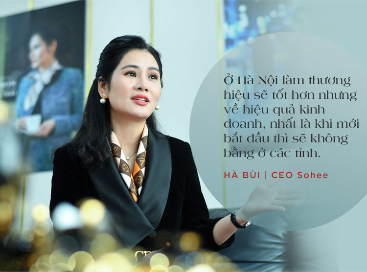
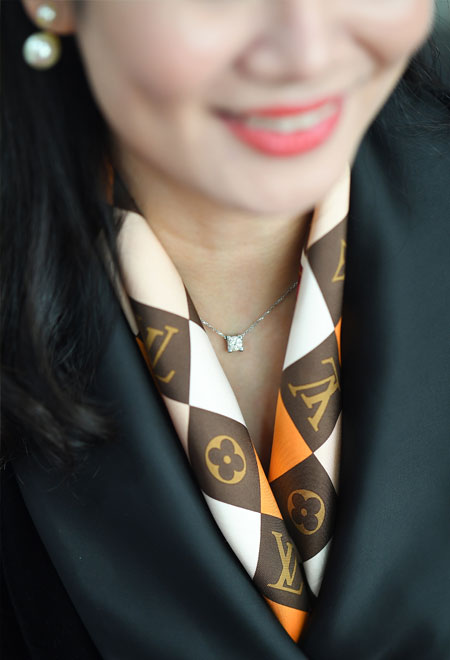
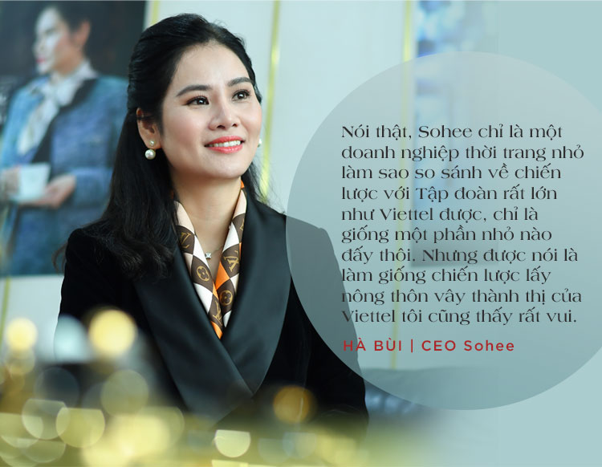
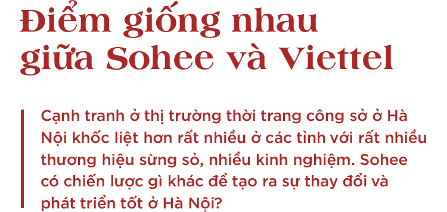
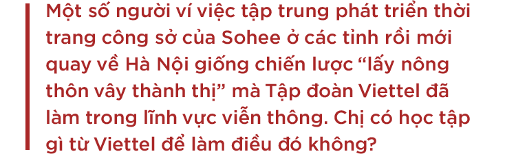
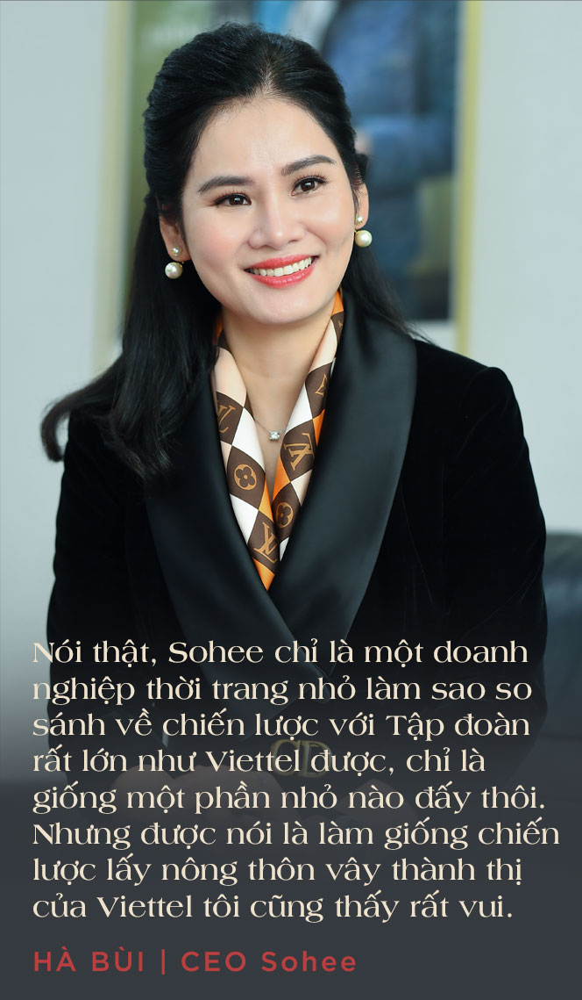

Theo kinh nghiệm của tôi, ở Hà Nội làm thương hiệu sẽ tốt hơn nhưng về hiệu quả kinh doanh, nhất là khi mới bắt đầu thì sẽ không bằng ở các tỉnh. Ví dụ, khi muốn mở một showroom hoành tráng ở Hà Nội phải mất tới 3 tỷ đồng trong khi ở Thanh Hoá chỉ khoảng 600 triệu. Bên cạnh đó, cạnh tranh ở phân khúc thời trang công sở ở tỉnh đỡ khốc liệt hơn tại Hà Nội mà khách hàng cũng dễ tính hơn.
Trong khi đó, những chị em có điều kiện ở tỉnh rất nhiều, họ chịu chi nhưng khó tìm nơi mua sắm thời trang công sở cao cấp hợp với mình ở địa phương. Họ thường đi xe ô tô lên thành phố vào các trung tâm thương mại, các showroom của những thương hiệu thời trang công sở lớn để mua hàng. Tuy nhiên, việc này mất rất nhiều thời gian, chi phí và không thuận tiện.
Vậy tại sao lại không mở showroom thời trang cao cấp ở những con phố mặt tiền tại trung tâm các tỉnh để chị em có thể đến đó mua sắm thoải mái mà không phải đi xa? Các showroom của Sohee bắt đầu từ nhu cầu đó.
Việc bán hàng qua đại lý ở các tỉnh sẽ khó đảm bảo một trải nghiệm mua sắm thời trang cao cấp thật tốt. Hoa hồng từ đại lý với một thương hiệu sẽ khó đảm bảo để nhà phân phối đầu tư những showroom sang trọng, cũng khó có đầy đủ mẫu mã, size… để phục vụ khách hàng. Đây chính là lý do khiến phân phối qua đại lý sẽ khó phát triển mạnh với hàng thời trang công sở cao cấp.
Khi Sohee đầu tư vào những showroom hoành tráng trên mặt tiền các con phố lớn nhất tại các tỉnh, trải nghiệm mua sắm sẽ khác hẳn với những nơi bán các hàng thời trang công sở khác. Tất nhiên, việc đầu tư như vậy cũng sẽ có rủi ro lớn hơn và quản lý mệt hơn rất nhiều nên không phải ai cũng thích làm.
Thực tế, một số người cũng đã bắt chước cách làm của Sohee nhưng không thành công. Có lẽ, họ chỉ nhìn thấy phần cơ hội chứ không chưa hiểu rõ nhiều điều cần làm khác khi mang thời trang công sở cao cấp về các tỉnh.
Đầu tiên là sản phẩm phải tốt. Những thiết kế mang phong cách thời trang Hàn Quốc của Sohee được thay đổi rất nhiều để phù hợp với phom dáng của người Việt Nam và xuất phát từ những xu hướng thời thượng trên thị trường.
Chất liệu vải của Sohee được đầu tư đặc biệt bởi chỉ có loại vải chất lượng mới có thể tạo nên những mẫu trang phục có phom dáng chuẩn. Ở cùng một mặt bằng sản phẩm với giá tương tự, Sohee bao giờ cũng có chất liệu vải tốt hơn nhiều bởi tôi coi đó là một điểm khác biệt cho sản phẩm của mình. Bên cạnh đó, chất lượng may cũng được đặc biệt quan tâm bởi tôi từng là công nhân may mà (cười). Thực tế là Sohee cũng sẵn sàng trả cho nhân công may cao hơn mặt bằng chung khoảng 30% để có được chất lượng đường kim mũi chỉ thật tốt.
Tuy nhiên, khi có sản phẩm tốt rồi thì khâu bán hàng cũng cực kỳ quan trọng. Bạn có hàng tốt nhưng thái độ của nhân viên không tốt, cửa hàng không được thiết kế tương xứng với chuẩn cao cấp thì khách có thể mua một lần nhưng sẽ không đến lại lần sau. Vì thế, tôi thường xuyên trực tiếp đào tạo nhân viên về kỹ năng bán và dịch vụ khách hàng bởi đây chính là điều tạo ra khác biệt của Sohee sau khi đã có sản phẩm tốt.
Khách hàng ở tỉnh khi mua hàng ở showroom chính hãng Sohee sẽ rất khác bởi ngoài dịch vụ tốt, họ có thể chọn đủ các mẫu mã mới nhất, đủ size và có nhiều quyền lợi, chương trình ưu đãi. Thực ra, Sohee thành công ở các tỉnh là nhờ tìm đúng thị trường và làm đúng nhiều thứ cùng một lúc chứ không phải chỉ làm đúng 1-2 thứ hay đơn thuần có sản phẩm tốt.
Khi mới lên Hà Nội mở công ty, sản xuất hàng tại đây, mở showroom bán hàng ở Hải Dương, Thanh Hoá, tôi đã tự hứa với mình là sẽ trở lại thủ đô. Trở lại Hà Nội với các showroom ở Cầu Giấy, Thái Hà và sau đó là Bà Triệu… ban đầu tôi nghĩ là mình sẽ chấp nhận lỗ thời gian đầu rồi sẽ tính tiếp bởi đây là nơi rất tốt để quảng bá thương hiệu. Thế nhưng, thực tế sau hơn một năm thì cả các showroom có chi phí rất cao như ở Vincom Bà Triệu cũng không lỗ. Riêng showroom ở Cầu Giấy năm 2019 còn tăng trưởng doanh số tới 30%, điều làm tôi khá bất ngờ.
Thực ra từ khi khởi nghiệp thì Sohee cũng gặp nhiều vấn đề về cạnh tranh rồi chứ không phải đến khi quay lại Hà Nội mới gặp nên tôi thấy cũng bình thường. Tuy nhiên, thời gian đầu tiên khi thị trường Hà Nội cũng không dễ dàng với Sohee. Sự thay đổi đến từ việc tôi cũng thay đổi tư duy về sản phẩm.
Trước đó, Sohee chỉ tập trung vào thời trang truyền thống với 100% sản phẩm phải có tay, kín đáo và rất nghiêm túc. Đến khi tôi mở thêm dòng thời trang cao cấp - “Sohee by Ha Bui” và khá thành công trong năm 2018 thì có sự thay đổi. Các sản phẩm “Sohee by” quyến rũ hơn, phóng khoáng hơn, có cả áo, váy sát nách… không chỉ được ưa chuộng tại các tỉnh mà được khách hàng Hà Nội đón nhận khá tốt. Đây là lý do quan trọng giúp Sohee kinh doanh tốt ở thủ đô trong năm 2019.
Còn về chiến lược của Sohee vẫn là sản phẩm trước hết, nhưng sau đó là dịch vụ. Sohee đã nâng cấp toàn bộ các showroom để đạt mức độ cao cấp hơn và chất lượng dịch vụ khách hàng ở một mức mới.
Tôi chỉ xin lấy ví dụ đơn giản, mua một chiến iPhone ở Thế giới di động, FPT, hay Viettel thì chỗ nào cũng là chất lượng sản phẩm của Apple thôi; nhưng nhân viên bán hàng có kỹ năng ra sao và trải nghiệm mua sắm như thế nào sẽ là nhân tố quyết định.
 (Cười) Lúc bắt đầu khởi nghiệp, tôi chỉ là một cô công nhân nhặt chỉ mới học cách làm kinh doanh thời trang, mọi việc đều làm theo bản năng và học hỏi từ thực tế chứ biết gì đến chiến lược của Viettel đâu. Sau này, khi làm ở các tỉnh tốt và quay lại Hà Nội thì có người bảo Sohee làm giống thế, chứ mình chỉ là doanh nghiệp thời trang nhỏ làm sao so sánh với chiến lược của một Tập đoàn như Viettel.
Nhưng có một cái tôi thấy Sohee cũng giống Viettel, đó là làm mọi thứ rất nhanh. Ví dụ như việc may mẫu xong 1 sản phẩm, tôi mặc thử và post chơi lên facebook thì chỉ sau 1 tuần, những khách hàng thích sản phẩm đó đã có thể mua được ở showroom. Đây là điều không dễ thực hiện. Tại Sohee, nhiều việc khác cũng được thực hiện như vậy giúp cho hiệu quả kinh doanh tốt hơn.